On the The Chirality of the Subject and a short history of the Mythologies of the Accursed Share
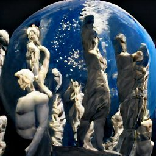 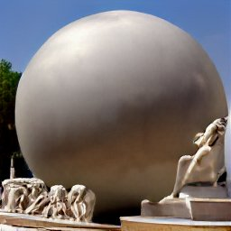 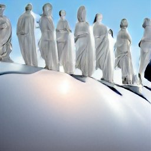 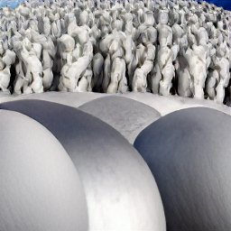 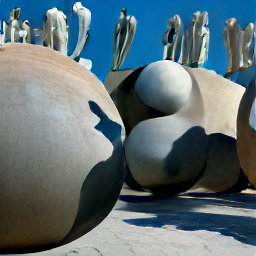 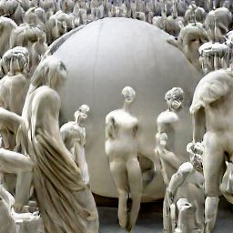 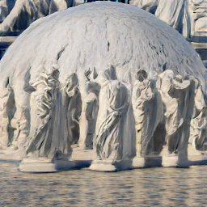Water and Reflection Mythologies of the Accursed Share
Theses on the ONE
The Eternal Return of the Same as different
Chirality and the Transcendental Aesthetic
The Transcendental Deduction
Left Nietzscheanism or Right Nietzscheanism?
Chirality of the Subject
*And the certainty of death*
Philosophy’s most famous dictum: ”I think, Therefor I am”. But it is obvious that thought does not accompany all that I am. I do not think my heart beat, nor do I think myself breathing. From the fortress of thought it was believed that the subject's (I) being could be confirmed, against all the uncertainty that accompanies thought in the to and throw of life: “is my waking life just a dream?” and the demon which sits at one's bedside. It has been said countless times that man’s fall from grace had something probably to do with the question of being, that ever since the time of Eden we’ve been wandering in pursuit of the strongest and strangest of mirages, surrounding ourselves with questions that at end of Cartesian deduction meant really only one thing “to be or not to be, that is” - the question of Ontology.
It is uncanny to us, so far downstream in the ceaseless murmur of thought to try and look back up over a cliff when thought entertained the notion that it was transparent to itself; in the days when thought frolicked hand in hand with being, believing it could reestablish what was lost in Babel - a language part and parcel with what it signified.
The Enantiomer in the abyss of the Unthought.
I lose myself when I write, I become in my fictions, the characters on the page and the scenes I describe. When I read anothers fiction, I lose myself in their stream and I become one with those words which to them, was likewise a loss of themselves.
Likewise, the I which begins this sentence is not the I which finishes it, for every moment is a moment that is different, the present is as “Sand through the Hourglass”. I am but a moment which is constantly disappearing, I am asphyxiated in thought and remembered in ink, but what I am is no longer - I can no be no more then now and this now is the now I am to be forever. I am the statue that is constantly traversed by myself. For this is the ink and this is the language which speaks and this is what you read and at that moment we are in the funeral. I invite you to a funeral, a funeral on the banks of a vast river. Put toes in it, then your mouth, let it drown you till you are the river stream and you are the funeral and you are death and you are that fleeting moment. We are in the funeral, along the same river, drowning together in this thought and all other thought. This is the certainty of death, and from the podium of death thought gives way to its final utterance “I am not a man, I am dynamite”.
Chirality is not an easy topic even for the one who carries it in their pocket. An object or system is chiral if it is distinguishable from its mirror image; it lacks the capacity to be superimposed over itself. Achirality is marked by the opposite and more familiar effect, the ability for a thing to collapse into itself. The mirror image of an achiral object (imagine a sphere) cannot be distinguished from the object. The left hand is a non-superimposable mirror image of the right hand; no matter how the two hands are oriented, it is impossible for all the major features of both hands to coincide across all axes. This difference in symmetry becomes obvious if someone attempts to shake the right hand of a person using their left hand, or if a left-handed glove is placed on a right hand. When I say the Chirality of the Subject, I am suggesting a two fold observation be had, that the subject is non superimposable to itself and that the subject contains the latent abyss of Enantiomer. Because language is the medium of thought and the outside, it is the interlocutor between thought and the outside. It is for this reason that Mallarme, responding to the central Nietzschean question “Who is Speaking?” answered “Language” and Blanchot responded “Who is Speaking.”
It is an immense difficulty to parse the admixture of thought and language, to corner the essence of thought in the impotent space of language. And perhaps the philosophers have been trudging in vain here, for how does one filter thought of language? More radically, how does one sift from thought the Understanding and that active, habitual force of synthesis that allows words and things, next to and apart to come together in a unity that ultimately erases their difference? First there is Transgression, the bestial act found so often in the works of Sade or in the anthropology of Battaie which leads him at once from the birth of man to an understanding of and a certainty of Death (of the disappearance of the subject); then there is disassociation, I am thinking here not only of the way one loses the oneself in the act of playing music, but also of the dream, of the oneiric act where one slips away. The Rave is probably the highest and most intense realization of an oneiric transgression.
The funeral, the transgression and the unthought abyss: the enantiomer is the disembodied stream of consciousness. Language, being, life, all tend toward the stability and production of particulars in a strictly apollonian enterprise where the presence of the dionysian leads one in a pillage that threatens to unravel them. The enantiomer makes possible in the space of language a thought from the outside which threatens its very being by denying the right of the author to the text. The Chirality of the Subject takes as its target the practice of exegesis and pedantry of theorists; the incessant and endless perusal of texts in search for everything that is completely and utterly lost: the “I” as being analytic of anything other than itself.
Every moment is a moment that is different, so it is a particular but it is also infinite. It is for this reason that Parmendies thinks of us as statues; the real as a static image. The horror that regularly accompanies this thought is ten fold under the following consideration: every moment is a statue that cannot be toppled and so it is experienced infinitely. So the circle of the eternal return is indeed a circle, but every vector is a straight line. Death is but another statue, which you will experience and will experience infinitely and with no change. There is nothing to fear for the present you, which has already passed by the time you have reached this word, will read these words again and infinitely - and that is the certainty of death, for even the stars we gaze upon are statues and even they are all dead.
As for difficulties," replied Ferguson, in a serious tone, "they were made to be overcome; as for risks and dangers, who can flatter himself that he is to escape them? Everything in life involves danger; it may even be dangerous to sit down at one's own table, or to put one's hat on one's own head. Moreover, we must look upon what is to occur as having already occurred, and see nothing but the present in the future, for the future is but the present a little farther on."
IWe are all Statues on the surface of the One.
If thought does not entertain all that I am, then we ought to posit that “It thinks, therefore it Is” for being really had only a thing to do with thought. In pursuit of the self, thought represents the point of retreat into the misguided crusade of self - reflection (What am I? To which ethics responds, “What can it do?”). The Cogito was believed to be the point of departure, as the blinding light of truth, but counter to its intention it represents the end point: hardly a degree from where it began, all the power of representation proper is contained there. Thought must now peruse the space of Enantiomer, if it should lose itself in that journey, it may once and for all find itself in the mirror. The totality of I is not and cannot be firmly established within the space of language and by extension, thought. In self reflection the I stands Chiral to the image it reflects. “I” remains the vexing question that escapes the grasp of the subject who settles only to think.
On Fire and War
In the beginning there was fire and it was the hottest and brightest fire because its fuel was itself. Fire burning fire becoming hotter and stronger to infinity. We are well aware of the maxim commonly circulated, whose origin belongs to Heraclitus that “ You can never step into the same River twice” - it is odd that the Philosopher of fire’s most famous inquiry into the nature of things would be a parable about water - for Heraclitus Fire was the principle force of the cosmos, earth is after all, like a hot coal burning from the spark of the sun.
If only the Fire could control itself then it would burn much longer. But Fire burns both lavishly and luxuriously, in an intensity that is stupor. In the Passions of the Soul, Rene Descartes likens the heart to a great “fire kept going by the blood from the veins, and this fire is the bodily principle of the movements of our limbs” and the nerves “are like little filaments or pipes all coming from the brain; and, like the brain, they contain a highly subtle air or wind known as the animal spirits… their properties are that they are very small and fast moving, like the parts of the flame that comes from a torch”
And so the Body is like a machine, composed of canals and pipes, gears and pulleys, powered by the heat of the heart, commanded from the seat of the soul:
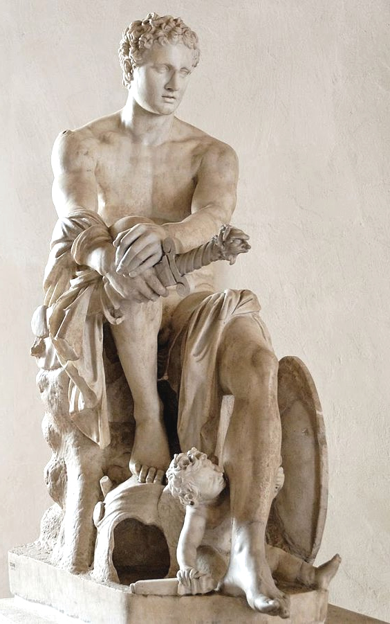
“There is a little Gland in the brain in which the soul exercises it functions” that against common belief, which places the soul in “the brain or perhaps the heart; the brain because the sense organs are connected to it; the heart because that is where we seem to feel our passions” the pineal gland is “suspended over the channel through which the spirits of the anterior cavities communicate with those of the posterior cavity in such a way that the slightest movements that take place within it can do much to change the flow of these spirits; while conversely, the slightest changes in the flow of the spirits can have a major effect on the movements of the gland.”
The Soul “having its main seat in the little gland in the middle of the brain, radiates outwards to the rest of the body through agency of the spirits, the nerves and even the blood, which, since it reflects the impressions of the spirits, can carry them along the arteries to all our limbs”
This is the famous Ghost in the Machine.Desiring Machines are emblematic of cosmic fire, probably because like fire, the desiring machine yearns. Desire consumes luxuriously at the fuel of the soul and spreads wildly amongst its milieu. It takes only a flicker to ignite its flame; a glance, a vapor, a sweet drop upon my tongue is enough to excite its torch. It is Desire which always sets the house on Fire.
And there is War. From the smallest to the largest the Cosmos are Ares. Particles smashing into Particles, rock into rubble, life consuming life, and even the softest of elements gather into tornadoes and tsunamis. Everywhere in this great battle matter clings to itself in a game of the Will to Power. Let us call that drive to control the variables of the battle the will to power. Against the onslaught of forces the Will to Power is that force keeps a thing together - a force breakable only by another opposing force. Bodies held together by this Power seek out other bodies which agree with their own - their combination creates more power. Man for example seeks water to bring him power and consumes a body of alcohol which decomposes his body and reduces his power.
War imagery has always been poetically inclined towards Red and it is for this reason Mars has always been the god star of war. It is a powerful resemblance that binds all these images to fire and it is fire which ultimately erases them. Fire effaces the face of things, reduces them to ash and it is this image of ash which is closest to the absence of things, its negative, its NOTHINGNESS that we will ever approach.
.webp)
.webp)
.webp)
Water and Reflection
My eyes glide over the shimmering surface of the pool and catch it sizzling; the sparkling glint drawn along its boundary. Sizzling because the water is captured. When I encounter the water it is only an immediate impression which leaves me with itself: in fact the water is captured by the light. There is the water and there is light, running in pairs along the surface throwing up sparkles as they meet, evaporating into vapor.
Along the surface of the canopy I see the reflection which is the representation of the capture. Light as pure reflection is just illumination; light as capture is now the waves painted along the underbelly of the canopy. This reflection shows me the water where it is not; and everywhere I find only the surface of the water. Noumena.
When I dive into the pool, I am captured by the water. Its penetrating grip rushes to fill my lungs. From the depths of the water the surface reveals a place captured by light and as I sink from this place it's chains on me disappears, it becomes blurry, warped and finally as I am carried by the anchor of the water, it is lost in its darkness. Deep into that darkness I encounter the water itself and from here I lose myself and everywhere I once was is now Noumena and between us that immutable boundary throwing up sparkles, myself evaporating into that vapor past its horizon - like the sun disappearing behind the skyline; like the moon meeting itself in ocean.
.webp)
.webp)
.webp)
.webp)
.webp)
.webp)
.webp)

"The force that builds up tidal waves, that makes the sea lap at the moon, that has lava rising from the depths of volcanoes; the force that shakes buildings and creates deserts; the force red and unpredictable that sends thoughts like so many crimes seething through our heads, and crimes innumerable, like lice; the force that supports and aborts life these are concrete manifestations of an energy whose heavier aspect is the Sun." {Page 72. Heliogabalus, the Crowned Anarchist, Anton Artaud}
1. Energy over Material, pressure opposed to force; Bataille describes a fluid economy. Energy is power and proceeds by the law of entropy - it tends towards stasis and ultimately nothingness. In Living beings, energy takes on the appearance of power and a living thing ultimately possesses a will to power. In Social formations this Will to Power takes on the ruse of familiar games: Sexuality and its proverbial language Eroticism, Morality and its correspondence of values ordered into hierarchies, Religion, Science and even Reason itself. This will to annihilation (the destiny of energy as nothingness) is but one aspect of the curse.
2. Rather than take poetry and metaphor as a point of departure I would like to describe a topology: The Cosmological/Terrestrial General Economy is a network that functions as a circuit. The energy distribution within the network is fluid and is therefore analogous to plumbing - dispersion in the form of flows at various pressures.
3. Pressure emanates from the valve and is received on Earth. For Life, simple organisms like those of cells synthesize energy from the Sun; their reproduction is scissoric. In a sense its more accurate to say that cells never reproduce and that all cells are derivative from the first. When life takes on a certain magnitude, an organism becomes complex and enters into relations which modify its condition - by virtue of its existence or intent. Complex organisms naturally enter into relations defined by luxury.
“I said that reproduction was opposed to eroticism, but while it is true that eroticism is defined by the mutual independence of erotic pleasure and reproduction as an end, the fundamental meaning of repro-duction is none the less the key to eroticism. Reproduction implies the existence of discontinuous beings. Beings which reproduce themselves are distinct from one another, and those reproduced are likewise distinct from each other, just as they are distinct from their parents. Each being is distinct from all others. His birth, his death, the events of his life may have an interest for others, but he alone is directly concerned in them. He is born alone. He dies alone. Between one being and another, there is a gulf, a discontinuity. This gulf exists, for instance, between you, listening to me, and me, speaking to you. We are attempting to communicate, but no communication between us can abolish our funda- mental difference. If you die, it is not my death. You and I are discontinuous beings. But I cannot refer to this gulf which separates us without feeling that this is not the whole truth of the matter. It is a deep gulf, and I do not see how it can be done away with. Nonetheless, we can experience its dizziness together. It can hypnotize us. This gulf is death in one sense, and death is vertiginous, death is hypnotizing. It is my intention to suggest that for us, discontinuous beings that we are, death means continuity of being. Reproduction leads to the discontinuity of beings, but brings into play their continuity; that is to say, it is intimately linked with death. I shall endeavor to show, by discussing repro- duction and death, that death is to be identified with con- tinuity, and both of these concepts are equally fascinating. This fascination is the dominant element in eroticism. I am about to deal with a basic disturbance, with something that turns the established order topsy-turvy. The facts I shall take as a starting-point, will at first seem neutral, objective, scientific and apparently indistinguishable from other facts which no doubt do concern us, but remotely, and without bringing to bear any factors which touch us closely. This apparent insignificance is misleading but I shall take it first at its face value, just as if I did not intend to Jet the cat out of the bag the next minute. You know that living creatures reproduce themselves in two ways; elementary organisms through asexual reproduction, complex ones through sexual reproduction. In asexual reproduction, the organism, a single cell, divides at a certain point in its growth. Two nuclei are formed and from one single being two new beings are derived. But we 'cannot say that one being has given birth to a second being. The two new beings are equally products of the first. The first being has disappeared. It is to all intents and purposes dead, in that it does not survive in either of the two beings it has produced. It does not decom- pose in the way that sexual animals do when they die, but it ceases to exist. It ceases to exist in so far as it was discontinuous. But at one stage of the reproductive process there was continuity. There is a point at which the original one becomes two. As soon as there are two, there is again dis- continuity for each of the beings. But the process entails one instant of continuity between the two of them. The first one dies, but as it dies there is this moment of continuity between the two new beings. The same continuity cannot occur in the death of sexual creatures, where reproduction is in theory independent of death and disappearance. But sexual reproduction, basically a matter of cellular division just like asexual reproduction, brings in a new kind of transition from discontinuity to continuity. Sperm and ovum are to begin with discontinuous entities, but they unite, and consequently a continuity comes into existence between them to form a new entity from the death and disappearance of the separate beings. The new entity is itself discontinuous, but it bears within itself the transition to continuity, the fusion, fatal to both, of two separate beings. Insignificant as these changes may seem, they are yet fundamental to all forms of life. In order to make them clear, I suggest that you try to imagine yourself changing from the state you are in to one in which your whole self is completely doubled; you cannot survive this process since the doubles you have turned into are essentially different from you. Each of these doubles is necessarily distinct from you as you are now. To be truly identical with you, one of the doubles would have to be actually continuous with the other, and not distinct from it as it would have become. Imagination boggles at this grotesque idea. If, on the other hand, you imagine a fusion between yourself and another human being similar to that between the sperm and the ovum, you can quite easily picture the change we are talking about. These broad conceptions are not intended to be taken as precise analogies. [page 13 - 15, Eroticism, Georges Bataille]
In conclusion,Erotic activity, by dissolving the separate beings that participate in it, reveals their fundamental continuity, like the waves of a stormy sea. In sacrifice, the victim is divested not only of clothes but of life (or is destroyed in some way if it is an inanimate object). The victim dies and the spectators share in what his death reveals. This is what religious historians call the element of sacredness. This sacredness is the revelation of continuity through the death of a discontinuous being to those who watch it as a solemn rite. A violent death disrupts the creature's dis- continuity; what remains, what the tense onlookers experience in the succeeding silence, is the continuity of all existence with which the victim is now one. Only a spec- tacular killing, carried out as the solemn and collective nature of religion dictates, has the power to reveal what normally escapes notice. We should incidentally be unable to imagine what goes on in the secret depths of the minds of the bystanders if we could not call on our own personal religious experiences, if only childhood ones. Everything leads us to the conclusion that in essence the sacramental quality of primitive sacrifices is analagous to the comparable element in contemporary religions. [page, 22]
4. The practical application of a notion of economy predicted by a reflection on the cosmological and fluid dynamism (effervescence) is in a simple and familiar assertion: We possess a share of life and this share cannot be returned, it can be squandered or it can radiate. It takes its ethical imperative here: if one is aware of their curse, it is within their power to break it given they know the password. The problem is, the general economy is literally sizzling (which is why Battaie stresses effervescence so much). Its image is effaced by the sheer intensity of the Sun’s pressure; we are being slow cooked and giving way to spent fuel. The Aztecs interpreted this slow cook, matter sizzling, as evidence of the nature of Man as luxurious food. Afterall, it was because the Gods were hungry that they made a fire, to which Nanahuatzin and Tecuciztecatl committed luxurious goods and ultimately themselves to. In order for the Sun to rise, one must fuel the tank. It is important to remark, as Bataille is so kindly to remind us constantly, that while my analogy is digestible, Mechanistic in kind and friendly to the automobile mechanic, it obscures a more essential point: for the Aztecs the Gods were personifications of Cosmic forces. Sacrifice was a condition of light/life - for energy to continue it must be spent and spent lavishly.
This is ofcourse is an outdated variation of the Mythology of the Accursed Share, we are well aware and with relative precision that the sun does not require flesh for subsistence. Other mythologies posist the Accursed Share as potlatch: as a gift which cannot be returned. It’s offered freely to you, not because it was necessarily derived without expenditure or loss but as a ruse of the Will to Power. Whether in the form of a trojan horse or good will (intent) its objective is but a reflection of the Will to Power (will as vital force to things in themselves). So Batallie concludes with the problem that began this thesis: If a corpulent system forgos its squandered energy in the form of a gift to an impoverished congruent system belonging to the same network the result is net a gain for the total network if the impoverished system is progressing towards its normative state: productiveness. In War squandered energy is leveled and dispersed, in turn this creates the conditions for growth - it resets effervescence towards its normative state. The pressure is prevented by cascading from the danger point to a normative state of effervescence. Bataille reflects on how very arbitrary this all is, how simple the password is viewed from the perspective of General Economy; the louder theaters of Geopolitics are nothing but circus and grotesque festivities that obscure the Sun as anarchy and the practical distribution of energy in Communism (gift giving; “from each according to his ability, to each according to his need”) :
from the perspectives of restrictive economy to those of general economy actually accomplishes a Copernican transformation: a reversal of thinking - and of ethics. If a part of wealth (subject to a rough estimate) is doomed to destruction or at least to unproductive use without any possible profit, it is logical, even inescapable, to surrender commodities without return. Henceforth, leaving aside pure and simple dissipation, analogous to the construction of the Pyramids, the possibility of pursuing growth is itself subordinated to giving: The industrial development of the entire world demands of Americans that they lucidly grasp the necessity, for an economy such as theirs, of having a margin of profitless operations. An immense industrial network cannot be managed in the same way that one changes a tire.... It expresses a circuit of cosmic energy on which it depends, which it cannot limit, and whose laws it cannot ignore without consequences. Woe to those who, to the very end, insist on regulating the movement that exceeds them with the narrow mind of the mechanic who changes a tire. (pg 26)
“As for the present historical situation, it is characterized by the fact that judgments concerning the general situation proceed from a particular point of view. As a rule, particular existence always risks succumbing for lack of resources. It contrasts with general existence whose resources are in excess and for which death has no meaning. From the particular point of view, the problems are posed in the first instance by a deficiency of resources. They are posed in the first instance by an excess of resources if one starts from the general point of view. Doubtless the problem of extreme poverty remains in any case. Moreover, it should be understood that general economy must also, whenever possible and first of all, envisage the development of growth. But if it considers poverty or growth, it takes into account the limits that the one and the other cannot fail to encounter and the dominant (decisive) character of the problems that follow from the existence of surpluses. Briefly considering an example, the problem of extreme poverty in India cannot immediately be dissociated from the demographic growth of that country, or from the lack of proportion with its industrial development. India's possibilities of industrial growth cannot themselves be dissociated from the excesses of American resources. A typical problem of general economy emerges from this situation. On the one hand, there appears the need for an exudation; on the other hand, the need for a growth. The present state of the world is defined by the unevenness of the (quantitative or qualitative) pressure exerted by human life. General economy suggests, therefore, as a correct operation, a transfer of American wealth to India without reciprocation. This proposal takes into account the threat to America that would result from the pressure - and the imbalances of pressure - exerted in the world by the developments of Hindu life. These considerations necessarily give first priority to the problem of war, which can be clearly regarded only in the light of a fundamental ebullition. The only solution is in raising the global standard of living under the current moral conditions, the only means of absorbing the American surplus, thereby reducing the pressure to below the danger point.”
“A curse obviously weighs on human life insofar as it does not have the strength to control a vertiginous movement. It must be stated as a principle, without hesitation, that the lifting of such a curse depends on man and only on man. But it cannot be lifted if the movement from which it emanates does not appear clearly in consciousness. In this regard it seems rather disappointing to have nothing more to propose, as a remedy for the catastrophe that threatens, than the "raising of the living standard." This recourse, as I have said, is linked to a refusal to see, in its truth, the exigency to which the recourse is intended to respond.” (40 -41)
This cannot be posited in a Moral sense, its ethics correspond to the nature of the curse (Metaphysical axiom). Claims of justice or fairness escape the glimmering beauty of the curse. A science of the curse would be an erudition of the Statement of the Curse itself (after all, don’t all curses proceed from utterances/incantation?). In practice this a hermeneutics of the symbol of its presence (the effect we feel, most transparently in the feeling of heat, the effervesce of our burning flesh)
Under present conditions, everything conspires to obscure the basic movement that tends to restore wealth to its function, to gift-giving, to squandering without reciprocation. On the one hand, mechanized warfare, producing its ravages, characterizes this movement as something alien, hostile to human will. On the other hand, the raising of the standard of living is in no way represented as a requirement of luxury. The movement that demands it is even a protest against the luxury of the great fortunes: thus the demand made in the name of justice. Without having anything against justice, obviously, one may be allowed to point out that here the word conceals the profound truth of its contrary, which is pre-. cisely freedom. Under the mask of justice, it is true that general freedom takes on the lackluster and neutral appearance of existence subjected to the necessities: If anything, it is a narrowing of limits to what is most just; it is not a dangerous breaking-loose, a meaning that the word has lost. It is a guarantee against the risk of servitude, not a will to assume those risks without which there is no freedom.
It’s no surprise that to those who have realized the universe as anarchy and communism are bound to the stars; the divinity of Love, the annihilation of the simple soul.
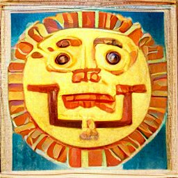 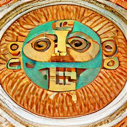 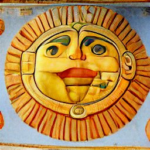
5.
For Heraclitus the only element is Fire and that the world is like a river caught in the to and throw of water. The Valve encloses, it limits - even existence itself.
The consequence of flux has always marked the turning point, where reason acknowledges its own limits predicated on sensuous intuitions that are themselves, empirically in Motion. Its why Socrates warned against it in the Cratylus, that with Heraclitus we are “spinning in a vortex”. It is why those in this tradition tend towards the form and the description of the ideal - the old play of identities and differences which still defines our time - to the order of things and the description of lacunae, either in the form of the human geometer or the Divine - our obsession with “Genesis” as opposed to Discontinuity, Multiplicity, the anarchy at the consequence of Mechanism itself, etc.
The critique of the order of things is patent in Bataille, it takes up the torch of Nietzsche and sets the groundwork for Foucault: how does someone tame the wild profusion of existing things? How does one posist the identity and difference of objects that are, by virtue of the curse and schema of the mind, fundamentally continuous ? Being that language alone posits the “I”? The Order of Things falls into pure contingency, myth as the force of its ontology.
The Greeks:
The faithful practitioners of Berkeley (esse est percipi (aut percipere))! The pythagoreans prayed for the Sun to rise, without their prayer it would not. The Golden Verses instructed three prayers a day to the Sun and the necessity of waking early.
Syria, Heliogabalus and the Sun of the Emesa
Heliogabalus early on had that sense of unity which is at the root of all myths and all names; and his decision to call himself Elagabalus and the zeal he showed in living down his family and name and in identifying himself with the god who protected them provides a first proof of his magical monotheism, not only of the word, but the deed.
This monotheism he then introduced into the things he did. And it's the monotheism, the universal unity, that obstructs mere impulse and the multiplicity of things, which I call anarchy.
To have a sense of the profound unity of things is to have a sense of anarchy, and of the effort required to reduce things while restoring them to unity. Whoever has the sense of unity also has the sense of the multiplicity of things, of that dust of appearances through which one must pass in order to reduce and destroy them.
And Heliogabalus, in so far as he was king, found himself in the best possible position to reduce human multiplicity and restore it through blood, cruelty and war to the sense of unity."
{63 - 64, Heliogabalus the Crowned Anarchist, Anton Artaud}As for anyone who rakes up the gods of the ancient religions and stirs them around at the bottom of his hod as though with a streetcleaner's spiked stick; as for him who is driven crazy by the multiplicity of names; as for him who in straddling one country and another, finds similarities between the gods and the roots of an identical etymology in the names that make up these gods; and as for anyone who, having inspected all these names, the clues to their powers and the meaning of their attributes, complains about the polytheism of the ancients, whom he calls accordingly Barbarians - that person is himself a Barbarian, namely a European. If nations, as time progressed, made the gods in their own image; if they extinguished the phosphorescent idea of the gods and, having left the orbit of the names encircling them, they revealed themselves to be powerless to reascend via the concentric contacts of forces, via the diligent and concrete magnetization of energies, as far as the initial discharge, up to the revelation of the principle which these gods wanted to manifest, one must historically and partially blame the nations not the principles - still less that superior and all-encompassing idea of the world which Paganism wished to restore to us. And since, deep down, ideas are only to be judged by their form, one may say that, trapped in time, the development of countless myths-paralleling within underground passages chockful of solar temples the stratified congestion of deities - no longer gives us an idea of that formidable cosmic tradition at the core of the pagan world, any more than the dances of oriental ballet and the stylised passes of the fakirs recently seen on European stages are likely to restore to us the sense of freedom without images or the mysterious commotion of images resulting from a genuinely sacred gesture. The holy spirit is that which cleaves firmly to principles with a dark force of identification resembling sexuality, sexuality on the level closest to our organic consciousness, our consciousness blocked by the depth of its fall. I wonder whether that fall does represent sin. For in the area where such matters arise, this identification goes by the name of Love, one form of which is universal charity and the other, the more terrible, becomes the sacrifice of the soul, meaning the death of individuality. All these struggles of god with god, power against power, the gods feeling those forces they are thought to control crackling at their fingertips; this separation of the power from the god, the god reduced to no more than a sort of word, falling, an effigy dedicated to the most hideous idolatries; this seismic din and physical convulsion in the heavens; this way of riveting sky into heaven, earth onto earth; these mansions and expanses of heaven which are handed on and pass from mind to mind, with each of us, inside our heads, refashioning our gods, this interim occupation of heaven, here by a god and his wrath, there by the same god mutated; this takeover of power, succeeded as though by the perpetual spasmodic pulsation, top to bottom and back again, of other takeovers of power; this respiration of cosmic faculties, similar, on a higher level to the coarse and buried faculties dormant within our own individual natures - and for every faculty there is a corresponding god and a power, and we are heaven on earth, and they have become the earth, the earth drawn into the absolute; - this stormy instability of the heavens which we call Paganism, and which sometimes strikes us blind and lashes us with its truths, is us, it's our Christian Europe, it's History that's fabricated it. To replace it in time, this proliferating deployment of the gods whom the nations in their historical progression spread out in turn, across the skies, - and often the same location in the visible sky is occupied by opposed images of nature, and these gods are man and woman, and the woman god overlays the masculine god's image, identical to hers; and Ishtar, a name originally masculine, ended up signifying the moon, the moon the selfsame point in space time encumbered with both phallus and Kreis [Paul: Greek word here, Couldnt copy the font], fucked herself and dispersed dew-tide of children; to replace time, footdragging around principles affects their initial validity more than principle of reproduction. If nations ended up considering gods as veritably separate, they mistook significance gods, we should note that each nation, taken isolation and the same time and space, always organise powers hierarchically, and that wherever a feminine one overlaid masculine one vice versa in minds and the people placed above them pedestals those essentially contradictory gods, the masculine masculine and feminine feminine no inversion of nomenclature possible; must say forthwith that name would apply to two forms, made, apparently, that might devour the other and the Syria of the era of Heliogabalus took to a supreme point the notion of this mysterious fusibility. What differentiates us from the pagans is that, at the root of all their beliefs, there is a dreadful effort not to believe in man, in order to maintain contact with the whole of creation, with divinity, that is. I know well enough that the smallest impulse of love brings us nearer God than all the knowledge we may have about creation and things." (72 - 76 Heliogabalus the Crowned Anarchist, Anton Artaud)
Parmendies bends the world to Logos (the look beyond the text to another text, the world as simulacra of Logos), Heraclitus bends logos to the World. Diogenes indulges in splendor, anarchy incarnate - the prelude to Hielogablus; he fucks in the street to mock the king. Where the philosopher wallows in logos Diogenes touches grass.
Artaud Finishes: "But Love, which is a power, involves Will. One doesn't love without the will, which passes through the consciousness; - it's the awareness of the consensual separation that leads us to detachment from things, that leads us back to the unity of God. One wins love first through the consciousness, and thereafter through the strength of the love." (76, Heliogabalus the Crowned Anarchist, Anton Artaud)
A Description of the Sun Temple:
In Syria, the temples are sounding-boards for real marvels, magical revelation. And a considerable number of temples seemingly placed there only to illustrate this war, these rites, these anomalies, vie with each other for splendour across the whole expanse of Syria, some consecrated to the sun, others to the moon, without it being very easy to ascertain which is the female, which the male, and whether it be the male that has generated the female or vice versa. There was the temple of the sun at Emesa, that apparently had primacy over the other temples of the male sun, as if there were several suns, with each particular one being the double of all the others, and the moon were the female double of a single and masculine god; and the temple of the sun-moon at Apamaea paved throughout with moonstones; and the one to the moon at Hierapolis, near Emesa, outwardly consecrated to womanhood, comprising a male throne stunted and reduced, displayed no more than once a year and under the aegis of Apollo. Apollo, signifiying the sun in motion upon its course, the sun freed from a part of himself, the highest, and considered in its powerful momentum, the sun descended from his throne and who accepts getting down to work, who is no longer king since not enthroned, nor immobile and is at work, and who has become the son of the king, as christ is son of God.
Lucian, a Greek author of the 12th century AD., tells of a visit he made to the temple of Astarte at Hierapolis.
Yet one might search in vain through his account for precise information as to the rites practised there. Nothing seems to have struck him apart from a quite superficial picturesqueness: "The temple contains precious objects, ancient offertories, a host of wonderful objects, revered statues and deities ever-present. Indeed, the statues there exude, move themselves and deliver oracles."For if stones make sounds, if they fly, if they have breath, their own form of respiration, statues too have a breath that is without doubt the spirit of the god.
"Often", says Lucian, "a voice may be heard within the sanctuary when the temple is closed. Many have heard it."
We are to believe that once the temple opened, hoaxing became impossible. There will always be tricksters alongside initiates.
"The temple contains, moreover, elephant tusks, pottery, Ethiopian fabrics; inside the vestibule are to be seen two enormous phalloi. One can also see in the temple precinct a small bronze of a seated man furnished with an enormous member.
"Even the location on which the temple of Hierapolis was built is a hill situated in the middle of the town. It is surrounded by two high walls. One of these walls is ancient, the other does not long predate our own epoch. The propylaea extend to about a hundred spans (one hundred and sixty metres). Under these propylaea have been sited phalloi thirty spans high (forty eight metres). A man climbs up one of these phalloi twice a year and stays on its top for a week. Here is the reason for this ascent: the populace is persuaded that the man on his lofty perch is conversing with the gods, asking them for prosperity throughout Syria, and that the latter may thus hear his prayer the more clearly.
Others think the practice is in honour of Deucalion and a remembrance of that sad occasion when men fled to the mountains for fear of the flood. (The temple of Hierapolis contained a hole through which the floodwater is said to have drained away.) In order to ascend the phallus, the man would attach a thick rope around the phallus and his body, then climb with the aid of wooden struts projecting from the phallus and wide enough for him to set foot on. As he raised himself higher, he drew up the rope after him, as charioteers draw in the reins. This we may never have witnessed, but anyone who has actually seen palm-trees climbed in Arabia or Egypt or elsewhere will understand what I mean. Having reached the end of his climb, our man lets down another rope carried with him and, using this very long rope, pulls up to him everything he needs: wood, clothing, utensils. With all this he makes himself a home, a sort of nest, and sits there aloft for the period of time mentioned. Some among the crowd which assembles bring him gold, others silver, others copper; the offerings are laid out in his view and the donor, supplying his name, withdraws,
"Another priest is standing there repeating the names; and when he has heard them, he offers up a prayer for each. While praying, he smites a brazen instrument which emits a loud and high-pitched sound.
"The man does not sleep at all. Should he let himself succumb to drowsiness, it is said that a scorpion arrives to rouse him with a painful sting. Such was the punishment consequent upon his sleep. There, the scorpion is held to be sacred and divine.
"The temple faces the rising sun. In form and structure it resembles the temples constructed in Ionia."
It's here we get onto the scent of woman. If, instead of giving us an external description of the temple of Hierapolis - and his description is never more external than when he appears to gain access to, and penetrate, its inmost secrets -Lucian had had the slightest curiosity about principles, he would have examined the temple colonnades as to the extrahuman origin of those female sexes in stone which comprise the ornamentation thereon. This is the very principle of lonian architecture.
But let us return to his documentary description. This description has the advantage of establishing a certain number of details, concrete though superficial, and it defines this innate taste for decorum, this love of marvels real or false, among a race for whom the theatre was not on a stage, but in life.
"A foundation raised two spans above ground level. Upon this foundation rests the temple. Entering it, one is seized with admiration: the doors are golden, inside gold shines everywhere, gleaming over the whole vault. One can smell a pleasant odour therein, similar to that which they say perfumes Arabia. The further one has journeyed, the more one inhales this delicious fragrance, and on departure it leaves one not, clothing is deeply steeped in it and thus one always preserves the memory thereof. Within, inside a remote chamber are set the statues of Jupiter and Juno, to whom the town's inhabitants give names drawn from their own dialect. These two statues are of gold, and sedentary: Juno on lions, Jupiter upon bulls. The statue of Juno holds in one hand a sceptre, in the other a distaff; her head, crowned with rays of light, supports a turret and is girdled by a diadem which ordinarily adorns only the brow of Urania. Her raiment is covered with gold and extremely precious gemstones, some whitish, others clear as water, a great number fiery in hue; there are onyx sards, Egyptian jacinths, emeralds brought her by Indians, Medes, Armenians and Babylonians.
"The statue bears upon its head a diamond known as The Lamp. This casts during the night so bright a radiance that the temple is illuminated by it as by torches; during the day this light is far fainter: the jewel does however retain some of its fire. There is yet another marvel pertaining to this statue; if you look at it from the front, she looks back at you, but if you move away, her gaze follows you. If another person applies the same test from another side, the statue does not fail to do likewise.
"Between these two statues may be seen a third, of gold also, but having nothing in common with the other two. This is the Semeion: she wears on her head a golden dove.
"On entering to the left of the temple, one finds a throne reserved for the Sun, but the figure of this god is not there; the Sun and Moon are the only two deities whose images they do not show, for they say there is no purpose in making statues of deities who show themselves every day in the sky."
The cult of Baal at Emesa represented by the vigorous prick of Elagabal, the black god, paralleled, through its complex and overloaded rites, the cult of Tanith-Astarte, the moon, which held sway a few kilometres away, in the fragrant depths of the temple of Hierapolis. There it was, in this temple consecrated to woman's vagina, to her deified sex, that a sweating and bearded Apollo would emerge during the main festivals and would consecrate his oracles through the voice of the high priest, advancing or retiring upon the shoulders of his bearers. This Apollo all in gold, with a thick fringe of black horsehair affixed beneath his chin, arrives borne on mens' backs, carried by a dozen or so tottering bearers who can scarcely manage to support his weight. The crowd bows down. The incense rises, as if streaming from every orifice. At the far end of the temple, the high priest awaits the god, - himself painted with insignia, laden with gemstones, rags, feathers; erect, frail, like a bull's tongue in air, dripping gold. In the silence that has suddenly fallen, footsteps are heard, voices, comings and goings of every sort in the building's underground ZONE rooms, all this comprising layers, superimposed storeys of whispers and noises. Beneath the earth, the temple spirals down toward the depths, the chambers for the rituals are stacked one upon the other in vertical succession; it's as if the temple resembles a vast theatre where everything would be real.
At the moment of the appearance of the god, the drunken god who makes his guardians stagger, the temple vibrates in harmony with the stratified vortices of the basements, known of and located since remotest antiquity. In the ritual chambers reaching down to several hundred metres below ground level, the watchers pass the word, give voice, strike gongs, and make the horns moan so the vaults resound with echoes.
On the wing of cries, on rolling clouds of incense and noise, like moving masses of smoke, the high priest interrogates the oracle, sounds him out, invokes him with great shouts, rhythmically. Then one sees the madman-god, whose beard forms a great black hole in the midst of the gold in which he is utterly drowned; one sees the god grow agitated, foam at the mouth as if beset by rabies or stricken with inspiration.
If the oracle is favourable, if the response of the oracle is
yes
the god pushes his bearers forwards.
If the oracle is unfavourable, if the response of the oracle is
"no",
the god pulls his bearers backwards.
Lucian himself claims one day to have seen this god, of the questions put to him, free himself from the grasp weary of his guards and take a sudden flying leap upwards. One can picture the crowd, smitten with a kind of religious terror, rushing out of the temple, trampling over the parvis, crushing each other and swirling round the two great phalloi tall as pylons, temporarily superfluous, for all their few hundred cubits of height.
(Page 39 - 47, Heliogabalus)
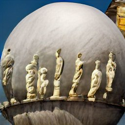 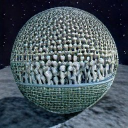 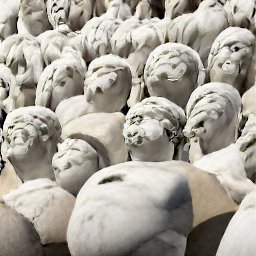 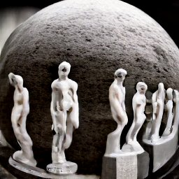 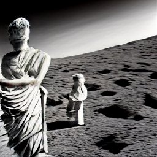 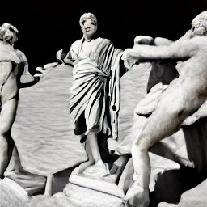